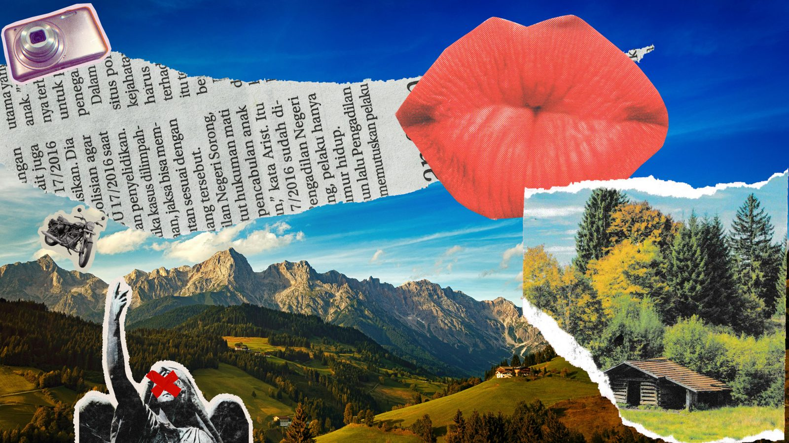

About Non-Slop Fun
There’s life beyond your job.
Are you living it?
Non-Slop Fun is a weekly newsletter for burned-out creatives and knowledge workers who want a more creative, curious life beyond the 9‑to‑5.

Why this exists
Work was never supposed to be the whole point.
For a long time, my life was mostly work. Roadmaps, meetings, metrics, and a phone that followed me home. Whatever energy was left at the end of the day went to scrolling, because I was too fried to do anything else.
That’s what burnout looked like for me. Not one dramatic collapse, but a slow narrowing. The books, the writing, the making: all the things that made me feel like a whole person got crowded out by KPIs and quarterly goals.
Non-Slop Fun is where I’m widening my life back out, one essay at a time. Making room for curiosity, creativity, and a sense of achievement that has nothing to do with a performance review. You’re invited to come along.
What you’re signing up for
Non-Slop Fun is
- Irreverent
- Colorful language included. Not for kids.
- Reflection-driven
- Written from lived experience as a busy professional juggling too many demands on my attention.
- Proudly nerdy
- Pro-book, pro-writing, anti-brainrot.
Non-Slop Fun is not
- AI-generated
- Every word is written by a human. It’s in the name.
- New-age self-help
- No quick-fix hacks and no productivity porn. Just the real, disciplined work of making things.
Build a life that’s bigger than your job.
One free essay a week to help you reclaim your curiosity, make more things, and find the kind of satisfaction a performance review can’t give you.
Go be rebellious. Read a book.